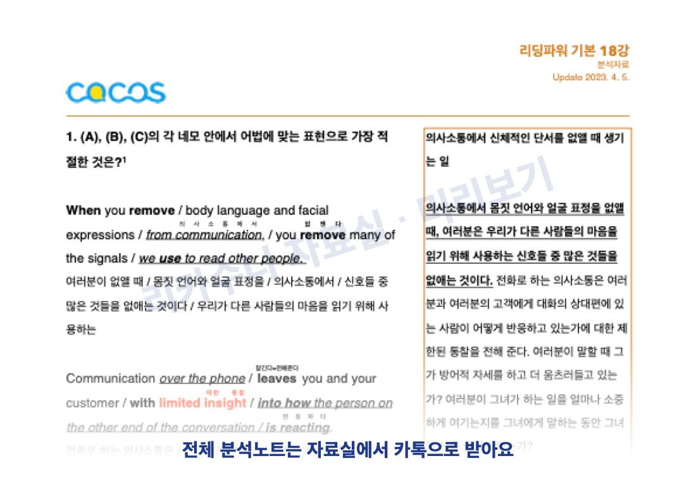

리딩파워 기본 18강 1번 해설이에요. (네모 어법 · 정답 ③ (A) leaves (B) getting (C) easier)
정답 근거, 네모마다 거르는 법, 구문(the 비교급, the 비교급 · and 병렬), 어휘를 정리했고 분석노트 pdf 받는 곳은 글 아래에 있어요.
안녕하세요, 이매동 코코스학원 리카수니 원장입니다.
학생 요청으로 만든 분석노트를 바탕으로 정리했어요. 지문은 교재에 있으니 교재를 펴 놓고 함께 보세요.
· 교재: 리딩파워 기본 18강 1번
· 유형: (A), (B), (C) 네모 안에서 어법에 맞는 표현
· 정답: ③ (A) leaves …… (B) getting …… (C) easier
의사소통에서 몸짓 언어와 얼굴 표정을 없애면 상대의 마음을 읽는 신호가 많이 사라진다는 글이에요.
전화로는 상대가 어떻게 반응하는지 알기 어렵고, 신체적 단서가 적을수록 오해가 쉬워지지만, 다행히 목소리 톤으로 여전히 많은 걸 알 수 있다는 흐름이에요.
· (A) leaves → 주어 Communication over the phone 뒤 문장의 동사 자리예요. leaving 이면 동사가 없어요.
· (B) getting → Is he in a defensive posture and (is) getting more withdrawn? 의문문에서 is 에 이어지는 진행형이라 getting 이에요.
· (C) easier → the 비교급, the 비교급 구문에서 it is 의 보어 자리라 형용사 easier 예요. (부사 more easily ✕)
→ leaves – getting – easier, 정답 ③이에요.
· 동사 자리냐 준동사 자리냐: 주어 다음에 동사가 없으면 동사(leaves)
· and 앞뒤 모양 맞추기: be 동사 뒤 진행형이면 -ing
· be 동사 뒤 보어 자리면 형용사, 동사를 꾸미면 부사

1) the 비교급 ~, the 비교급 ~ (~할수록 더 …하다)
→ The more physical cues we remove from our interactions, the easier it is to have misunderstandings.
2) leave A with B (A에게 B를 남기다·안겨 주다), insight into + 간접의문문(how ~)
3) 목적격 관계대명사 생략: the signals (that) we use to read other people
4) instead of + 동명사 (~하지 않고, ~ 대신에)
5) tell (알다, 구별하다): you can still tell a lot from tone of voice
· body language 몸짓 언어
· facial expression 얼굴 표정
· signal 신호
· read (마음을) 읽다
· limited 제한된
· insight 통찰
· react 반응하다
· defensive 방어적인
· posture 자세
· withdrawn 움츠러든, 내성적인
· roll one's eyes 눈을 굴리다
· value 소중히 여기다
· cue 단서
· interaction 상호작용
· misunderstanding 오해
· fortunately 다행히
· tone of voice 목소리 톤
분석노트에 '틀린 곳 고치고 빈칸 채우기' 문제를 넣어 두었어요. the 비교급 구문(The more ~, the easier ~)은 내신 서술형에서 순서 배열·영작으로 자주 나오는 문장이에요.
끊어 읽기·해석·어법·서술형 문제가 정리된 PDF 는 리카수니 자료실에서 카카오 로그인 후 카톡으로 받을 수 있어요.
리딩파워 기본 다른 강·번호도 요청할 수 있어요.
▶ 분석노트 요청하기 (리카수니 자료실)
https://data.likasuni.com/notes/#note-req
※ 출처: 리딩파워 기본 18강. 지문 원문과 전체 해석은 싣지 않았어요.
분당 이매동 코코스학원은 초등·중등·고등 영어와 수학을 가르쳐요.
리딩파워·모의고사·내신 대비가 궁금하시면 편하게 문의해 주세요.
· 홈페이지: https://www.cocosedu.co.kr/
· 주소: 경기 성남시 분당구 판교로 476 2층